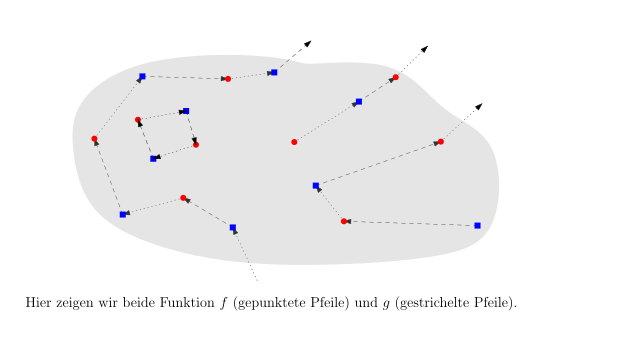
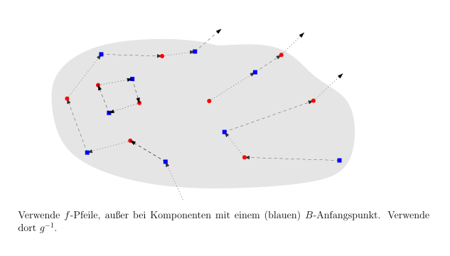

3.5 Das Schröder-Bernstein-Theorem./wly/03/05-Schroeder-Bernstein.wly:2:11
Betrachten wir noch einmal einen Beweis, dass./wly/03/05-Schroeder-Bernstein.wly:4:5 ./wly/03/05-Schroeder-Bernstein.wly:5:5$[0,1] \times [0,1] \approx [0,1]$./wly/03/05-Schroeder-Bernstein.wly:5:5../wly/03/05-Schroeder-Bernstein.wly:5:39 Wir nehmen zwei./wly/03/05-Schroeder-Bernstein.wly:5:39 Zahlen ./wly/03/05-Schroeder-Bernstein.wly:6:5$(x,y) \in [0,1] \times [0,1]$./wly/03/05-Schroeder-Bernstein.wly:6:12 und schreiben./wly/03/05-Schroeder-Bernstein.wly:6:42 sie in Binärdarstellung ./wly/03/05-Schroeder-Bernstein.wly:7:5$0.x_1 x_2 x_3 \dots$./wly/03/05-Schroeder-Bernstein.wly:7:29 und./wly/03/05-Schroeder-Bernstein.wly:7:50 ./wly/03/05-Schroeder-Bernstein.wly:8:5$0.y_1 y_2 y_3\dots$./wly/03/05-Schroeder-Bernstein.wly:8:5,./wly/03/05-Schroeder-Bernstein.wly:8:25 wobei wir ./wly/03/05-Schroeder-Bernstein.wly:8:25$1$./wly/03/05-Schroeder-Bernstein.wly:8:37 nicht als./wly/03/05-Schroeder-Bernstein.wly:8:40 ./wly/03/05-Schroeder-Bernstein.wly:9:5$1.000\dots$./wly/03/05-Schroeder-Bernstein.wly:9:5,./wly/03/05-Schroeder-Bernstein.wly:9:17 sondern als ./wly/03/05-Schroeder-Bernstein.wly:9:17$0.111\dots$./wly/03/05-Schroeder-Bernstein.wly:9:31 schreiben. Wir./wly/03/05-Schroeder-Bernstein.wly:9:43 produzieren eine Zahl ./wly/03/05-Schroeder-Bernstein.wly:10:5$f(x,y) \in [0,1]$./wly/03/05-Schroeder-Bernstein.wly:10:27,./wly/03/05-Schroeder-Bernstein.wly:10:45 indem wir./wly/03/05-Schroeder-Bernstein.wly:10:45 die Binärdarstellungen von ./wly/03/05-Schroeder-Bernstein.wly:11:5$x$./wly/03/05-Schroeder-Bernstein.wly:11:32 und ./wly/03/05-Schroeder-Bernstein.wly:11:35$y$./wly/03/05-Schroeder-Bernstein.wly:11:40 verschränken:./wly/03/05-Schroeder-Bernstein.wly:11:43 ./wly/03/05-Schroeder-Bernstein.wly:12:5$f(x,y) = 0.x_1 y_1 x_2 y_2 x_3 y_3 \dots$./wly/03/05-Schroeder-Bernstein.wly:12:5../wly/03/05-Schroeder-Bernstein.wly:12:47 Diese./wly/03/05-Schroeder-Bernstein.wly:12:47 Funktion ist injektiv. Aber eben nicht surjektiv: die./wly/03/05-Schroeder-Bernstein.wly:13:5 Zahl ./wly/03/05-Schroeder-Bernstein.wly:14:5$0.00111111$./wly/03/05-Schroeder-Bernstein.wly:14:10 beispielsweise ist nicht im./wly/03/05-Schroeder-Bernstein.wly:14:22 Wertebereich der Funktion. Aber da./wly/03/05-Schroeder-Bernstein.wly:15:5 ./wly/03/05-Schroeder-Bernstein.wly:16:5$[0,1] \times [0,1]$./wly/03/05-Schroeder-Bernstein.wly:16:5 ja viel größer als ./wly/03/05-Schroeder-Bernstein.wly:16:25$[0,1]$./wly/03/05-Schroeder-Bernstein.wly:16:45 ./wly/03/05-Schroeder-Bernstein.wly:16:52 erscheint, ist die Hauptarbeit geleistet../wly/03/05-Schroeder-Bernstein.wly:17:5 Surjektivität herzustellen sollte nicht so schwer./wly/03/05-Schroeder-Bernstein.wly:18:5 sein. Formalisieren wir diese Gedanken durch etwas./wly/03/05-Schroeder-Bernstein.wly:19:5 Notation../wly/03/05-Schroeder-Bernstein.wly:20:5
Definition 3.5.1./wly/03/05-Schroeder-Bernstein.wly:22:5 ./wly/03/05-Schroeder-Bernstein.wly:22:5 Seien ./wly/03/05-Schroeder-Bernstein.wly:23:9$A$./wly/03/05-Schroeder-Bernstein.wly:23:15 und ./wly/03/05-Schroeder-Bernstein.wly:23:18$B$./wly/03/05-Schroeder-Bernstein.wly:23:23 zwei Mengen. Wir schreiben./wly/03/05-Schroeder-Bernstein.wly:23:26 ./wly/03/05-Schroeder-Bernstein.wly:24:9$A \leq B$./wly/03/05-Schroeder-Bernstein.wly:24:9,./wly/03/05-Schroeder-Bernstein.wly:24:19 wenn es eine injektive Funktion./wly/03/05-Schroeder-Bernstein.wly:24:19 ./wly/03/05-Schroeder-Bernstein.wly:25:9$f : A \rightarrow B$./wly/03/05-Schroeder-Bernstein.wly:25:9 gibt. Falls ./wly/03/05-Schroeder-Bernstein.wly:25:30$A \leq B$./wly/03/05-Schroeder-Bernstein.wly:25:43 und./wly/03/05-Schroeder-Bernstein.wly:25:53 ./wly/03/05-Schroeder-Bernstein.wly:26:9$A \not \approx B$./wly/03/05-Schroeder-Bernstein.wly:26:9 gilt, so schreiben wir ./wly/03/05-Schroeder-Bernstein.wly:26:27$A \lt B$./wly/03/05-Schroeder-Bernstein.wly:26:51../wly/03/05-Schroeder-Bernstein.wly:26:60
Beispielsweise haben wir ./wly/03/05-Schroeder-Bernstein.wly:28:5$\N \lt \R$./wly/03/05-Schroeder-Bernstein.wly:28:30../wly/03/05-Schroeder-Bernstein.wly:28:41 Obige injektive./wly/03/05-Schroeder-Bernstein.wly:28:41 Funktion ./wly/03/05-Schroeder-Bernstein.wly:29:5$f : [0,1]\times [0,1]\rightarrow [0,1]$./wly/03/05-Schroeder-Bernstein.wly:29:14 ./wly/03/05-Schroeder-Bernstein.wly:29:54 bezeugt, dass ./wly/03/05-Schroeder-Bernstein.wly:30:5$[0,1] \times [0,1] \leq [0,1]$./wly/03/05-Schroeder-Bernstein.wly:30:19../wly/03/05-Schroeder-Bernstein.wly:30:50 Gilt./wly/03/05-Schroeder-Bernstein.wly:30:50 auch ./wly/03/05-Schroeder-Bernstein.wly:31:5$[0,1] \leq [0,1] \times [0,1]$./wly/03/05-Schroeder-Bernstein.wly:31:10?./wly/03/05-Schroeder-Bernstein.wly:31:41 Natürlich: die./wly/03/05-Schroeder-Bernstein.wly:31:41 Funktion ./wly/03/05-Schroeder-Bernstein.wly:32:5$g : [0,1] \rightarrow [0,1] \times [0,1]$./wly/03/05-Schroeder-Bernstein.wly:32:14 ./wly/03/05-Schroeder-Bernstein.wly:32:56 mit ./wly/03/05-Schroeder-Bernstein.wly:33:5$g(x) = (x,0)$./wly/03/05-Schroeder-Bernstein.wly:33:9 ist injektiv. Jetzt sollten Sie./wly/03/05-Schroeder-Bernstein.wly:33:23 aufhorchen: wir haben zwei Mengen./wly/03/05-Schroeder-Bernstein.wly:34:5 ./wly/03/05-Schroeder-Bernstein.wly:35:5$A = [0,1] \times [0,1]$./wly/03/05-Schroeder-Bernstein.wly:35:5 und ./wly/03/05-Schroeder-Bernstein.wly:35:29$B = [0,1]$./wly/03/05-Schroeder-Bernstein.wly:35:34 und haben./wly/03/05-Schroeder-Bernstein.wly:35:45 ./wly/03/05-Schroeder-Bernstein.wly:36:5$A \leq B$./wly/03/05-Schroeder-Bernstein.wly:36:5 und ./wly/03/05-Schroeder-Bernstein.wly:36:15$B \leq A$./wly/03/05-Schroeder-Bernstein.wly:36:20 gezeigt. Folgt daraus nicht./wly/03/05-Schroeder-Bernstein.wly:36:30 offensichtlich, dass ./wly/03/05-Schroeder-Bernstein.wly:37:5$A$./wly/03/05-Schroeder-Bernstein.wly:37:26 und ./wly/03/05-Schroeder-Bernstein.wly:37:29$B$./wly/03/05-Schroeder-Bernstein.wly:37:34 gleich groß sind,./wly/03/05-Schroeder-Bernstein.wly:37:37 also ./wly/03/05-Schroeder-Bernstein.wly:38:5$A \approx B$./wly/03/05-Schroeder-Bernstein.wly:38:10?./wly/03/05-Schroeder-Bernstein.wly:38:23 Lassen Sie sich nicht von der./wly/03/05-Schroeder-Bernstein.wly:38:23 suggestiven Notation ./wly/03/05-Schroeder-Bernstein.wly:39:5$\leq$./wly/03/05-Schroeder-Bernstein.wly:39:26 verführen! ./wly/03/05-Schroeder-Bernstein.wly:39:32$A \leq B$./wly/03/05-Schroeder-Bernstein.wly:39:44 und./wly/03/05-Schroeder-Bernstein.wly:39:54 ./wly/03/05-Schroeder-Bernstein.wly:40:5$B \leq A$./wly/03/05-Schroeder-Bernstein.wly:40:5 heißen, dass es injektive Funktion./wly/03/05-Schroeder-Bernstein.wly:40:15 ./wly/03/05-Schroeder-Bernstein.wly:41:5$f : A \rightarrow B$./wly/03/05-Schroeder-Bernstein.wly:41:5 und ./wly/03/05-Schroeder-Bernstein.wly:41:26$g : B \rightarrow A$./wly/03/05-Schroeder-Bernstein.wly:41:31 gibt../wly/03/05-Schroeder-Bernstein.wly:41:52 Um daraus zu folgern, dass ./wly/03/05-Schroeder-Bernstein.wly:42:5$A \approx B$./wly/03/05-Schroeder-Bernstein.wly:42:32 gilt, müssen./wly/03/05-Schroeder-Bernstein.wly:42:45 wir diese zu ./wly/03/05-Schroeder-Bernstein.wly:43:5einer./wly/03/05-Schroeder-Bernstein.wly:43:19 bijektiven Funktion./wly/03/05-Schroeder-Bernstein.wly:43:25 ./wly/03/05-Schroeder-Bernstein.wly:44:5$h: A \rightarrow B$./wly/03/05-Schroeder-Bernstein.wly:44:5 kombinieren. Geht das immer?./wly/03/05-Schroeder-Bernstein.wly:44:25
Theorem 3.5.2 (Schröder-Bernstein-Theorem)../wly/03/05-Schroeder-Bernstein.wly:46:5 Seien ./wly/03/05-Schroeder-Bernstein.wly:47:40$A$./wly/03/05-Schroeder-Bernstein.wly:47:47 und ./wly/03/05-Schroeder-Bernstein.wly:47:50$B$./wly/03/05-Schroeder-Bernstein.wly:47:55 ./wly/03/05-Schroeder-Bernstein.wly:47:58 zwei Mengen. Wenn ./wly/03/05-Schroeder-Bernstein.wly:48:9$A \leq B$./wly/03/05-Schroeder-Bernstein.wly:48:27 und ./wly/03/05-Schroeder-Bernstein.wly:48:37$B \leq A$./wly/03/05-Schroeder-Bernstein.wly:48:42 gilt,./wly/03/05-Schroeder-Bernstein.wly:48:52 dann gilt ./wly/03/05-Schroeder-Bernstein.wly:49:9$A \approx B$./wly/03/05-Schroeder-Bernstein.wly:49:19../wly/03/05-Schroeder-Bernstein.wly:49:32 In Worten: wenn es injektive./wly/03/05-Schroeder-Bernstein.wly:49:32 Funktionen ./wly/03/05-Schroeder-Bernstein.wly:50:9$f: A \rightarrow B$./wly/03/05-Schroeder-Bernstein.wly:50:20 und./wly/03/05-Schroeder-Bernstein.wly:50:40 ./wly/03/05-Schroeder-Bernstein.wly:51:9$g : B\rightarrow A$./wly/03/05-Schroeder-Bernstein.wly:51:9 gibt, dann gibt es auch eine./wly/03/05-Schroeder-Bernstein.wly:51:29 bijektive Funktion ./wly/03/05-Schroeder-Bernstein.wly:52:9$h: A \rightarrow B$./wly/03/05-Schroeder-Bernstein.wly:52:28../wly/03/05-Schroeder-Bernstein.wly:52:48
Beweis. Wir tun so, als ob ./wly/03/05-Schroeder-Bernstein.wly:55:9$A \cap B = \emptyset$./wly/03/05-Schroeder-Bernstein.wly:55:28 gälte../wly/03/05-Schroeder-Bernstein.wly:55:50 Falls dies nicht der Fall sein sollte, können wir ./wly/03/05-Schroeder-Bernstein.wly:56:9$A$./wly/03/05-Schroeder-Bernstein.wly:56:59 ./wly/03/05-Schroeder-Bernstein.wly:56:62 durch ./wly/03/05-Schroeder-Bernstein.wly:57:9$A \times \{0\} = \{ (a,0) \ | \ a \in A\}$./wly/03/05-Schroeder-Bernstein.wly:57:15 ./wly/03/05-Schroeder-Bernstein.wly:57:58 ersetzen und ./wly/03/05-Schroeder-Bernstein.wly:58:9$B$./wly/03/05-Schroeder-Bernstein.wly:58:22 durch./wly/03/05-Schroeder-Bernstein.wly:58:25 ./wly/03/05-Schroeder-Bernstein.wly:59:9$A \times \{1\} = \{ (b,1) \ | \ b \in B\}$./wly/03/05-Schroeder-Bernstein.wly:59:9../wly/03/05-Schroeder-Bernstein.wly:59:52 Wir./wly/03/05-Schroeder-Bernstein.wly:59:52 betrachten nun die Menge ./wly/03/05-Schroeder-Bernstein.wly:60:9$A \cup B$./wly/03/05-Schroeder-Bernstein.wly:60:34 und zeichnen./wly/03/05-Schroeder-Bernstein.wly:60:44 Pfeile ein: ./wly/03/05-Schroeder-Bernstein.wly:61:9$f$./wly/03/05-Schroeder-Bernstein.wly:61:21-Pfeile./wly/03/05-Schroeder-Bernstein.wly:61:24 von jedem ./wly/03/05-Schroeder-Bernstein.wly:61:24$a$./wly/03/05-Schroeder-Bernstein.wly:61:42 zu ./wly/03/05-Schroeder-Bernstein.wly:61:45$f(a)$./wly/03/05-Schroeder-Bernstein.wly:61:49 und./wly/03/05-Schroeder-Bernstein.wly:61:55 ./wly/03/05-Schroeder-Bernstein.wly:62:9$g$./wly/03/05-Schroeder-Bernstein.wly:62:9-Pfeile./wly/03/05-Schroeder-Bernstein.wly:62:12 von jedem ./wly/03/05-Schroeder-Bernstein.wly:62:12$b$./wly/03/05-Schroeder-Bernstein.wly:62:30 zu ./wly/03/05-Schroeder-Bernstein.wly:62:33$f(b)$./wly/03/05-Schroeder-Bernstein.wly:62:37:./wly/03/05-Schroeder-Bernstein.wly:62:43
 public/img/infinite-sets/schroeder-bernstein-digraph-1.svg
public/img/infinite-sets/schroeder-bernstein-digraph-1.svg
 public/img/infinite-sets/schroeder-bernstein-digraph-2.svg
public/img/infinite-sets/schroeder-bernstein-digraph-2.svg
 public/img/infinite-sets/schroeder-bernstein-digraph-3.svg
public/img/infinite-sets/schroeder-bernstein-digraph-3.svg
public/img/infinite-sets/schroeder-bernstein-digraph-4.svg
Wenn wir die Menge ./wly/03/05-Schroeder-Bernstein.wly:70:9$A \cup B$./wly/03/05-Schroeder-Bernstein.wly:70:28 zusammen mit den ./wly/03/05-Schroeder-Bernstein.wly:70:38$f$./wly/03/05-Schroeder-Bernstein.wly:70:56 -./wly/03/05-Schroeder-Bernstein.wly:70:59 und ./wly/03/05-Schroeder-Bernstein.wly:71:9$g$./wly/03/05-Schroeder-Bernstein.wly:71:13 -Pfeilen als Graphen auf einer unendlichen./wly/03/05-Schroeder-Bernstein.wly:71:16 Menge betrachten, dann sehen wir, dass es vier Arten./wly/03/05-Schroeder-Bernstein.wly:72:9 von Komponenten: (1) unendliche Pfade, die mit einem./wly/03/05-Schroeder-Bernstein.wly:73:9 roten kreisförmigen Punkt ./wly/03/05-Schroeder-Bernstein.wly:74:9$a \in A$./wly/03/05-Schroeder-Bernstein.wly:74:35 beginnen; (2)./wly/03/05-Schroeder-Bernstein.wly:74:44 unendliche Pfade, die mit einem blauen quadratischen./wly/03/05-Schroeder-Bernstein.wly:75:9 Punkt ./wly/03/05-Schroeder-Bernstein.wly:76:9$b \in B$./wly/03/05-Schroeder-Bernstein.wly:76:15 beginnen; (3) solche, die in beide./wly/03/05-Schroeder-Bernstein.wly:76:24 Richtungen unendlich sind und keinen Anfangspunkt./wly/03/05-Schroeder-Bernstein.wly:77:9 haben; (4) solche, die aus endlich vielen Punkten./wly/03/05-Schroeder-Bernstein.wly:78:9 bestehen. Wir definieren nun die Bijektion ./wly/03/05-Schroeder-Bernstein.wly:79:9$h$./wly/03/05-Schroeder-Bernstein.wly:79:52,./wly/03/05-Schroeder-Bernstein.wly:79:55 indem./wly/03/05-Schroeder-Bernstein.wly:79:55 wir in den Komponenten vom Typ (1), (3) und (4) die./wly/03/05-Schroeder-Bernstein.wly:80:9 Funktion ./wly/03/05-Schroeder-Bernstein.wly:81:9$f$./wly/03/05-Schroeder-Bernstein.wly:81:18 verwenden, in den vom Typ (2) jedoch./wly/03/05-Schroeder-Bernstein.wly:81:21 ./wly/03/05-Schroeder-Bernstein.wly:82:9$g^{-1}$./wly/03/05-Schroeder-Bernstein.wly:82:9:./wly/03/05-Schroeder-Bernstein.wly:82:17
public/img/infinite-sets/schroeder-bernstein-bijektion-1.svg
 public/img/infinite-sets/schroeder-bernstein-bijektion-2.svg
public/img/infinite-sets/schroeder-bernstein-bijektion-2.svg
 public/img/infinite-sets/schroeder-bernstein-bijektion-3.svg
public/img/infinite-sets/schroeder-bernstein-bijektion-3.svg
Formalisieren wir das ein bisschen. Wir definieren./wly/03/05-Schroeder-Bernstein.wly:89:9 eine Folge ./wly/03/05-Schroeder-Bernstein.wly:90:9$X_0, X_1, \dots$./wly/03/05-Schroeder-Bernstein.wly:90:20,./wly/03/05-Schroeder-Bernstein.wly:90:37 sodass./wly/03/05-Schroeder-Bernstein.wly:90:37 ./wly/03/05-Schroeder-Bernstein.wly:91:9$X_{2i} \subseteq B$./wly/03/05-Schroeder-Bernstein.wly:91:9 und ./wly/03/05-Schroeder-Bernstein.wly:91:29$X_{2i+1} \subseteq A$./wly/03/05-Schroeder-Bernstein.wly:91:34 für./wly/03/05-Schroeder-Bernstein.wly:91:56 alle ./wly/03/05-Schroeder-Bernstein.wly:92:9$i \geq 0$./wly/03/05-Schroeder-Bernstein.wly:92:14 gilt:./wly/03/05-Schroeder-Bernstein.wly:92:24
$$
\begin{align*}
X_0&:= B \setminus {\rm img} (f) \\ X_{2i+1}&:=
g(X_{2i}) \\ X_{2i+2}&:= f(X_{2i+1})\\ A'&:= X_1 \cup X_ 3 \cup
X_5 \cup X_7 \cup \dots \ .
\end{align*}
$$./wly/03/05-Schroeder-Bernstein.wly:94:9
In Worten: ./wly/03/05-Schroeder-Bernstein.wly:100:9$X_0$./wly/03/05-Schroeder-Bernstein.wly:100:20 sind die ./wly/03/05-Schroeder-Bernstein.wly:100:25$B$./wly/03/05-Schroeder-Bernstein.wly:100:35-Punkte,./wly/03/05-Schroeder-Bernstein.wly:100:38 die keine./wly/03/05-Schroeder-Bernstein.wly:100:38 eingehende ./wly/03/05-Schroeder-Bernstein.wly:101:9$f$./wly/03/05-Schroeder-Bernstein.wly:101:20 -Kante haben. ./wly/03/05-Schroeder-Bernstein.wly:101:23$X_i$./wly/03/05-Schroeder-Bernstein.wly:101:38 sind dann./wly/03/05-Schroeder-Bernstein.wly:101:43 diejenigen Knoten, die auf einem Pfad vom Typ (2)./wly/03/05-Schroeder-Bernstein.wly:102:9 liegen und von dem (blauen, in ./wly/03/05-Schroeder-Bernstein.wly:103:9$B$./wly/03/05-Schroeder-Bernstein.wly:103:40 liegenden)./wly/03/05-Schroeder-Bernstein.wly:103:43 Anfangspunkt Abstand ./wly/03/05-Schroeder-Bernstein.wly:104:9$i$./wly/03/05-Schroeder-Bernstein.wly:104:30 haben. ./wly/03/05-Schroeder-Bernstein.wly:104:33$A'$./wly/03/05-Schroeder-Bernstein.wly:104:41 sind also die./wly/03/05-Schroeder-Bernstein.wly:104:45 ./wly/03/05-Schroeder-Bernstein.wly:105:9$A$./wly/03/05-Schroeder-Bernstein.wly:105:9-Knoten,./wly/03/05-Schroeder-Bernstein.wly:105:12 die auf einer Typ-(2)-Komponente liegen../wly/03/05-Schroeder-Bernstein.wly:105:12 Wir können nun unsere Bijektion ./wly/03/05-Schroeder-Bernstein.wly:106:9$h : A \rightarrow B$./wly/03/05-Schroeder-Bernstein.wly:106:41 ./wly/03/05-Schroeder-Bernstein.wly:106:62 definieren:./wly/03/05-Schroeder-Bernstein.wly:107:9
$$
\begin{align*}
h : A&\rightarrow A\\ a&\mapsto \begin{cases} f(a)
&\textnormal{ if $a \in A \setminus A'$} \\ g^{-1}(a)&\textnormal{
if $a \in A'$.} \end{cases}
\end{align*}
$$./wly/03/05-Schroeder-Bernstein.wly:109:9
Wir müssen nun zeigen, dass ./wly/03/05-Schroeder-Bernstein.wly:115:9$h$./wly/03/05-Schroeder-Bernstein.wly:115:37 bijektiv ist (falls./wly/03/05-Schroeder-Bernstein.wly:115:40 das noch nicht klar sein sollte)../wly/03/05-Schroeder-Bernstein.wly:116:9
Behauptung 1../wly/03/05-Schroeder-Bernstein.wly:119:14 ./wly/03/05-Schroeder-Bernstein.wly:119:28$g^{-1}(a)$./wly/03/05-Schroeder-Bernstein.wly:119:29 ist definiert für jedes./wly/03/05-Schroeder-Bernstein.wly:119:40 ./wly/03/05-Schroeder-Bernstein.wly:120:13$a \in A'$./wly/03/05-Schroeder-Bernstein.wly:120:13 ../wly/03/05-Schroeder-Bernstein.wly:120:23
Beweis. Wenn ./wly/03/05-Schroeder-Bernstein.wly:123:13$a \in A'$./wly/03/05-Schroeder-Bernstein.wly:123:18 gilt, dann gilt ./wly/03/05-Schroeder-Bernstein.wly:123:28$a \in X_{2i+1}$./wly/03/05-Schroeder-Bernstein.wly:123:45,./wly/03/05-Schroeder-Bernstein.wly:123:61 ./wly/03/05-Schroeder-Bernstein.wly:123:61 also für einen ungeraden Index. Nach Konstruktion gilt./wly/03/05-Schroeder-Bernstein.wly:124:13 ./wly/03/05-Schroeder-Bernstein.wly:125:13$X_{2i+1} = g(X_{2i})$./wly/03/05-Schroeder-Bernstein.wly:125:13,./wly/03/05-Schroeder-Bernstein.wly:125:35 die Menge aller Bilder von./wly/03/05-Schroeder-Bernstein.wly:125:35 ./wly/03/05-Schroeder-Bernstein.wly:126:13$X_{2i}$./wly/03/05-Schroeder-Bernstein.wly:126:13 unter ./wly/03/05-Schroeder-Bernstein.wly:126:21$g$./wly/03/05-Schroeder-Bernstein.wly:126:28;./wly/03/05-Schroeder-Bernstein.wly:126:31 daher gibt es zu ./wly/03/05-Schroeder-Bernstein.wly:126:31$a \in X_{2i+1}$./wly/03/05-Schroeder-Bernstein.wly:126:50 ./wly/03/05-Schroeder-Bernstein.wly:126:66 auch ein ./wly/03/05-Schroeder-Bernstein.wly:127:13$b \in X_{2i}$./wly/03/05-Schroeder-Bernstein.wly:127:22 mit ./wly/03/05-Schroeder-Bernstein.wly:127:36$g(b) = a$./wly/03/05-Schroeder-Bernstein.wly:127:41../wly/03/05-Schroeder-Bernstein.wly:127:51 In andere./wly/03/05-Schroeder-Bernstein.wly:127:51 Worten: ./wly/03/05-Schroeder-Bernstein.wly:128:13$g^{-1}(a)$./wly/03/05-Schroeder-Bernstein.wly:128:21 ist definiert../wly/03/05-Schroeder-Bernstein.wly:128:32A\(\square\)
Eindeutig ist ./wly/03/05-Schroeder-Bernstein.wly:130:9$g^{-1}(a)$./wly/03/05-Schroeder-Bernstein.wly:130:23 sowieso, falls es./wly/03/05-Schroeder-Bernstein.wly:130:34 existiert. Wir sehen nun: ./wly/03/05-Schroeder-Bernstein.wly:131:9$h$./wly/03/05-Schroeder-Bernstein.wly:131:35 ist wohldefiniert. Ist./wly/03/05-Schroeder-Bernstein.wly:131:38 es injektiv?./wly/03/05-Schroeder-Bernstein.wly:132:9
Behauptung 2../wly/03/05-Schroeder-Bernstein.wly:135:14 ./wly/03/05-Schroeder-Bernstein.wly:135:28$h$./wly/03/05-Schroeder-Bernstein.wly:135:29 ist injektiv../wly/03/05-Schroeder-Bernstein.wly:135:32
Beweis. Seien ./wly/03/05-Schroeder-Bernstein.wly:138:13$a, a' \in A$./wly/03/05-Schroeder-Bernstein.wly:138:19 zwei verschiedene Elemente. Wir./wly/03/05-Schroeder-Bernstein.wly:138:32 unterscheiden drei Fälle: (1) Wenn./wly/03/05-Schroeder-Bernstein.wly:139:13 ./wly/03/05-Schroeder-Bernstein.wly:140:13$a, a' \in A \setminus A'$./wly/03/05-Schroeder-Bernstein.wly:140:13,./wly/03/05-Schroeder-Bernstein.wly:140:39 dann gilt./wly/03/05-Schroeder-Bernstein.wly:140:39 ./wly/03/05-Schroeder-Bernstein.wly:141:13$h(a) = f(a) \ne f(a') = h(a')$./wly/03/05-Schroeder-Bernstein.wly:141:13,./wly/03/05-Schroeder-Bernstein.wly:141:44 weil ./wly/03/05-Schroeder-Bernstein.wly:141:44$f$./wly/03/05-Schroeder-Bernstein.wly:141:51 injektiv./wly/03/05-Schroeder-Bernstein.wly:141:54 ist. (2) Wenn ./wly/03/05-Schroeder-Bernstein.wly:142:13$a, a' \in A$./wly/03/05-Schroeder-Bernstein.wly:142:27,./wly/03/05-Schroeder-Bernstein.wly:142:40 dann gilt./wly/03/05-Schroeder-Bernstein.wly:142:40 ./wly/03/05-Schroeder-Bernstein.wly:143:13$h(a) = g^{-1}(a) =: b$./wly/03/05-Schroeder-Bernstein.wly:143:13 und./wly/03/05-Schroeder-Bernstein.wly:143:36 ./wly/03/05-Schroeder-Bernstein.wly:144:13$h(a') = g^{-1}(a') =: b'$./wly/03/05-Schroeder-Bernstein.wly:144:13../wly/03/05-Schroeder-Bernstein.wly:144:39 Nun gilt auch ./wly/03/05-Schroeder-Bernstein.wly:144:39$b \ne b'$./wly/03/05-Schroeder-Bernstein.wly:144:55:./wly/03/05-Schroeder-Bernstein.wly:144:65 ./wly/03/05-Schroeder-Bernstein.wly:144:65 wenn nämlich ./wly/03/05-Schroeder-Bernstein.wly:145:13$b = b'$./wly/03/05-Schroeder-Bernstein.wly:145:26 gälte, dann auch ./wly/03/05-Schroeder-Bernstein.wly:145:34$g(b) = g(b')$./wly/03/05-Schroeder-Bernstein.wly:145:52;./wly/03/05-Schroeder-Bernstein.wly:145:66 ./wly/03/05-Schroeder-Bernstein.wly:145:66 ersteres ist aber ./wly/03/05-Schroeder-Bernstein.wly:146:13$a$./wly/03/05-Schroeder-Bernstein.wly:146:31,./wly/03/05-Schroeder-Bernstein.wly:146:34 letzteres ist ./wly/03/05-Schroeder-Bernstein.wly:146:34$a'$./wly/03/05-Schroeder-Bernstein.wly:146:50../wly/03/05-Schroeder-Bernstein.wly:146:54 (3) Wenn./wly/03/05-Schroeder-Bernstein.wly:146:54 ./wly/03/05-Schroeder-Bernstein.wly:147:13$a \in A \setminus A'$./wly/03/05-Schroeder-Bernstein.wly:147:13 und ./wly/03/05-Schroeder-Bernstein.wly:147:35$a' \in A'$./wly/03/05-Schroeder-Bernstein.wly:147:40 ist (oder./wly/03/05-Schroeder-Bernstein.wly:147:51 umgekehrt), dann gilt ./wly/03/05-Schroeder-Bernstein.wly:148:13$h(a) = f(a) =: b$./wly/03/05-Schroeder-Bernstein.wly:148:35 und./wly/03/05-Schroeder-Bernstein.wly:148:53 ./wly/03/05-Schroeder-Bernstein.wly:149:13$h(a') = g^{-1}(a') =: b'$./wly/03/05-Schroeder-Bernstein.wly:149:13,./wly/03/05-Schroeder-Bernstein.wly:149:39 also ./wly/03/05-Schroeder-Bernstein.wly:149:39$g(b') = a'$./wly/03/05-Schroeder-Bernstein.wly:149:46../wly/03/05-Schroeder-Bernstein.wly:149:58 Wir./wly/03/05-Schroeder-Bernstein.wly:149:58 müssen nun zeigen, dass ./wly/03/05-Schroeder-Bernstein.wly:150:13$b \ne b'$./wly/03/05-Schroeder-Bernstein.wly:150:37../wly/03/05-Schroeder-Bernstein.wly:150:47 Da./wly/03/05-Schroeder-Bernstein.wly:150:47 ./wly/03/05-Schroeder-Bernstein.wly:151:13$a' \in X_{2i+1}$./wly/03/05-Schroeder-Bernstein.wly:151:13 für ein ./wly/03/05-Schroeder-Bernstein.wly:151:30$i$./wly/03/05-Schroeder-Bernstein.wly:151:39 muss ./wly/03/05-Schroeder-Bernstein.wly:151:42$b' \in X_{2i}$./wly/03/05-Schroeder-Bernstein.wly:151:48 ./wly/03/05-Schroeder-Bernstein.wly:151:63 gelten. Wenn ./wly/03/05-Schroeder-Bernstein.wly:152:13$i=0$./wly/03/05-Schroeder-Bernstein.wly:152:26 ist, dann gilt./wly/03/05-Schroeder-Bernstein.wly:152:31 ./wly/03/05-Schroeder-Bernstein.wly:153:13$b' \in X_{2i} = B \setminus {\rm img}(f)$./wly/03/05-Schroeder-Bernstein.wly:153:13../wly/03/05-Schroeder-Bernstein.wly:153:55 Da./wly/03/05-Schroeder-Bernstein.wly:153:55 ./wly/03/05-Schroeder-Bernstein.wly:154:13$f(a) = b$./wly/03/05-Schroeder-Bernstein.wly:154:13 gilt aber ./wly/03/05-Schroeder-Bernstein.wly:154:23$b \in {\rm img}(f)$./wly/03/05-Schroeder-Bernstein.wly:154:34 und ./wly/03/05-Schroeder-Bernstein.wly:154:54$b$./wly/03/05-Schroeder-Bernstein.wly:154:59 und./wly/03/05-Schroeder-Bernstein.wly:154:62 ./wly/03/05-Schroeder-Bernstein.wly:155:13$b'$./wly/03/05-Schroeder-Bernstein.wly:155:13 sind verschieden. Wenn ./wly/03/05-Schroeder-Bernstein.wly:155:17$i \geq 1$./wly/03/05-Schroeder-Bernstein.wly:155:41 ist, dann./wly/03/05-Schroeder-Bernstein.wly:155:51 bedeutet ./wly/03/05-Schroeder-Bernstein.wly:156:13$b' \in X_{2i}$./wly/03/05-Schroeder-Bernstein.wly:156:22,./wly/03/05-Schroeder-Bernstein.wly:156:37 dass es ein./wly/03/05-Schroeder-Bernstein.wly:156:37 ./wly/03/05-Schroeder-Bernstein.wly:157:13$a'' \in X_{2i-1}$./wly/03/05-Schroeder-Bernstein.wly:157:13 gibt mit ./wly/03/05-Schroeder-Bernstein.wly:157:31$f(a'') = b'$./wly/03/05-Schroeder-Bernstein.wly:157:41 . Da./wly/03/05-Schroeder-Bernstein.wly:157:54 ./wly/03/05-Schroeder-Bernstein.wly:158:13$a'' \in X_{2i-1} \subseteq A'$./wly/03/05-Schroeder-Bernstein.wly:158:13 aber./wly/03/05-Schroeder-Bernstein.wly:158:44 ./wly/03/05-Schroeder-Bernstein.wly:159:13$a \in A \setminus A'$./wly/03/05-Schroeder-Bernstein.wly:159:13 , gilt ./wly/03/05-Schroeder-Bernstein.wly:159:35$a'' \ne a$./wly/03/05-Schroeder-Bernstein.wly:159:43 und somit./wly/03/05-Schroeder-Bernstein.wly:159:54 auch ./wly/03/05-Schroeder-Bernstein.wly:160:13$b \ne b'$./wly/03/05-Schroeder-Bernstein.wly:160:18../wly/03/05-Schroeder-Bernstein.wly:160:28A\(\square\)
Behauptung 3../wly/03/05-Schroeder-Bernstein.wly:163:14 ./wly/03/05-Schroeder-Bernstein.wly:163:28$h$./wly/03/05-Schroeder-Bernstein.wly:163:29 ist surjektiv../wly/03/05-Schroeder-Bernstein.wly:163:32
Beweis. Wir unterscheiden zwei Fälle. (1) Wenn./wly/03/05-Schroeder-Bernstein.wly:166:13 ./wly/03/05-Schroeder-Bernstein.wly:167:13$b \in X_0 \cup X_2 \cup X_4 \cup \dots$./wly/03/05-Schroeder-Bernstein.wly:167:13 ist, also./wly/03/05-Schroeder-Bernstein.wly:167:53 sagen wir ./wly/03/05-Schroeder-Bernstein.wly:168:13$b \in X_{2i}$./wly/03/05-Schroeder-Bernstein.wly:168:23,./wly/03/05-Schroeder-Bernstein.wly:168:37 dann sei ./wly/03/05-Schroeder-Bernstein.wly:168:37$a := f(b)$./wly/03/05-Schroeder-Bernstein.wly:168:48../wly/03/05-Schroeder-Bernstein.wly:168:59 Es./wly/03/05-Schroeder-Bernstein.wly:168:59 gilt ./wly/03/05-Schroeder-Bernstein.wly:169:13$a \in X_{2i+1}$./wly/03/05-Schroeder-Bernstein.wly:169:18 und daher./wly/03/05-Schroeder-Bernstein.wly:169:34 ./wly/03/05-Schroeder-Bernstein.wly:170:13$h(a) = g^{-1}(a) = b$./wly/03/05-Schroeder-Bernstein.wly:170:13../wly/03/05-Schroeder-Bernstein.wly:170:35 Das Element ./wly/03/05-Schroeder-Bernstein.wly:170:35$b$./wly/03/05-Schroeder-Bernstein.wly:170:49 hat also ein./wly/03/05-Schroeder-Bernstein.wly:170:52 Urbild, nämlich ./wly/03/05-Schroeder-Bernstein.wly:171:13$a$./wly/03/05-Schroeder-Bernstein.wly:171:29../wly/03/05-Schroeder-Bernstein.wly:171:32 (2) Wenn ./wly/03/05-Schroeder-Bernstein.wly:171:32$b \not \in B'$./wly/03/05-Schroeder-Bernstein.wly:171:43,./wly/03/05-Schroeder-Bernstein.wly:171:58 dann./wly/03/05-Schroeder-Bernstein.wly:171:58 gilt insbesondere./wly/03/05-Schroeder-Bernstein.wly:172:13 ./wly/03/05-Schroeder-Bernstein.wly:173:13$b \not \in X_0 = B \setminus {\rm img}(f)$./wly/03/05-Schroeder-Bernstein.wly:173:13;./wly/03/05-Schroeder-Bernstein.wly:173:56 also./wly/03/05-Schroeder-Bernstein.wly:173:56 ./wly/03/05-Schroeder-Bernstein.wly:174:13$b \in {\rm img} (f)$./wly/03/05-Schroeder-Bernstein.wly:174:13../wly/03/05-Schroeder-Bernstein.wly:174:34 Es gibt also ein ./wly/03/05-Schroeder-Bernstein.wly:174:34$a \in A$./wly/03/05-Schroeder-Bernstein.wly:174:53 mit./wly/03/05-Schroeder-Bernstein.wly:174:62 ./wly/03/05-Schroeder-Bernstein.wly:175:13$f(a) = b$./wly/03/05-Schroeder-Bernstein.wly:175:13../wly/03/05-Schroeder-Bernstein.wly:175:23 Was ist ./wly/03/05-Schroeder-Bernstein.wly:175:23$h(a)$./wly/03/05-Schroeder-Bernstein.wly:175:33?./wly/03/05-Schroeder-Bernstein.wly:175:39 Wenn./wly/03/05-Schroeder-Bernstein.wly:175:39 ./wly/03/05-Schroeder-Bernstein.wly:176:13$a \in A \setminus A'$./wly/03/05-Schroeder-Bernstein.wly:176:13 gilt, dann ist./wly/03/05-Schroeder-Bernstein.wly:176:35 ./wly/03/05-Schroeder-Bernstein.wly:177:13$h(a) = f(a) = b$./wly/03/05-Schroeder-Bernstein.wly:177:13,./wly/03/05-Schroeder-Bernstein.wly:177:30 und wir haben ein Urbild für ./wly/03/05-Schroeder-Bernstein.wly:177:30$b$./wly/03/05-Schroeder-Bernstein.wly:177:61 ./wly/03/05-Schroeder-Bernstein.wly:177:64 gefunden. Was aber, wenn ./wly/03/05-Schroeder-Bernstein.wly:178:13$a \in A'$./wly/03/05-Schroeder-Bernstein.wly:178:38,./wly/03/05-Schroeder-Bernstein.wly:178:48 also./wly/03/05-Schroeder-Bernstein.wly:178:48 ./wly/03/05-Schroeder-Bernstein.wly:179:13$a \in X_{2i+1}$./wly/03/05-Schroeder-Bernstein.wly:179:13?./wly/03/05-Schroeder-Bernstein.wly:179:29 Weil ./wly/03/05-Schroeder-Bernstein.wly:179:29$f(a)=b$./wly/03/05-Schroeder-Bernstein.wly:179:36 wäre dann./wly/03/05-Schroeder-Bernstein.wly:179:44 ./wly/03/05-Schroeder-Bernstein.wly:180:13$b \in X_{2i+2} \subseteq B'$./wly/03/05-Schroeder-Bernstein.wly:180:13,./wly/03/05-Schroeder-Bernstein.wly:180:42 wir befänden uns also./wly/03/05-Schroeder-Bernstein.wly:180:42 in Fall (1)../wly/03/05-Schroeder-Bernstein.wly:181:13A\(\square\)
Wir haben nun gezeigt, dass ./wly/03/05-Schroeder-Bernstein.wly:183:9$h$./wly/03/05-Schroeder-Bernstein.wly:183:37 definiert ist,./wly/03/05-Schroeder-Bernstein.wly:183:40 injektiv und surjektiv ist. Damit ist ./wly/03/05-Schroeder-Bernstein.wly:184:9$h$./wly/03/05-Schroeder-Bernstein.wly:184:47 eine./wly/03/05-Schroeder-Bernstein.wly:184:50 Bijektion../wly/03/05-Schroeder-Bernstein.wly:185:9A\(\square\)
Wenn Sie der formale Beweis zu sehr verwirrt, dann./wly/03/05-Schroeder-Bernstein.wly:187:5 halten Sie sich einfach an die Bilder mit den zwei./wly/03/05-Schroeder-Bernstein.wly:188:5 Arten von Punkten und Pfeilen../wly/03/05-Schroeder-Bernstein.wly:189:5